| Segment | Content | Plan level | Plan type |
|---|---|---|---|
| 1 | OK… the first thing I would do is to make a list of the shops that are quite close to each other | Executive | Generate plan |
| 2 | and highlight the dance class remembering that it is at a specific time | Metaplan | Satisfy time constraints |
| 3 | I would try to get to it first and get it over with… | Executive | Order messages |
| 4 | probably, in reality I would drop it…. | Executive | Evaluate plan Eliminate |
Lecture 3: Approaches to Research
Qualitative and Quantitative methods
Doing research is an integral part of your training as a psychologist. But before you can start thinking about doing research you need to be aware of the different approaches that you can take. The aim of today’s lecture is to give you an overview of these approaches.
In this lecture I’ll primarily focus on two broad categories of approaches— qualitative methods, and quantitative methods–but at the end I’ll also briefly mention how computer simulation can be used in psychology research. The current module, as with most of the research methods modules you’ll take in your degree, is focused on quantitative methods. Therefore, this lecture will be the one chance we’ll have to discuss methods that don’t fit neatly under the label quantitative until you have the chance to take more advanced courses later in your degree.
Introduction to Qualitative and Quantitative methods
Approaches to research are ordinarily split into two broad categories. We can give some simple descriptions of these categories.
Quantitative methods collect numbers/numerical data and use statistical tools.
Qualitative methods collect words, pictures, and artefacts.
As we’ll see, either of these approaches can be used to study a wide range of phenomena, and they don’t map neatly on to different subfields of psychology. Some researchers also adopt both approaches (mixed-methods) and some might apply quantitative methods to qualitative style data. Quantitative methods are probably easier to group together, because qualitative methods include such a broad range of approaches. For this reason we’ll start with quantitative methods first.
Outline of quantitative methods
Quantitative approaches take a phenomenon and try to condense it down into a few dimensions or variables that can be measured as precisely and reliably as possible. Because of this, it is very important to choose variables that are representative of the phenomenon you’re studying. This process of choosing variables that are representative of the phenomenon you’re interested in is called operationalisation.
Operationalisation means choosing a measurable proxy for the phenomenon you’re interested in. This is not always an easy process and involves lots of careful thought by researchers. How one researcher operationalises a phenomenon might be different to how another researcher does. And debates between researchers on exactly how to operationalise some phenomena can be common in the literature. Operationalisation will be an important part of your lab report.
Quantitative approaches often make use of statistical methods. Using statistical methods means looking at lots of cases by, for example, studying lots of people, and not just one or two. The goal with quantitative methods is often to develop generalisations, or theories that are generally applicable. This involves testing predictions that logically follow from theories (the deductive step).1
Outline of qualitative methods
Qualitative methods are focused on meaning rather than measurement. Instead of condensing a phenomenon down to a simple set of features dimensions (as is common in quantitative approaches), qualitative research tries to examine many features of a phenomenon. Qualitative approaches can do this, because instead of measuring many instances of a single variable, qualitative approaches try to look at all aspects of one or a few instances.
Qualitative approaches view the context (physical environment, social setting, cultural context) as a central part of the phenomenon being studied. In contrast, it is common for quantitative approaches to place less emphasis on the context by abstracting away from it.
Qualitative approaches—for example, grounded theory and phenomenology—also emphasise the idea of following the data wherever it leads (that is, the inductive step).
Qualitative methods is an umbrella term for a wide range of different methodologies. Each of these will have their own underlying theoretical assumptions and intellectual histories. I can’t do justice to them all in one short lecture. In fact, just one of these approaches would require an entire course to itself if you were to learn enough about it to be able to apply it to your own research. So instead what I’ll do is just pick out a few and highlight their key features.
The methods I have chosen are: (1) Verbal protocol analysis, (2) ethnographic methods, (3) discourse analysis, and (4) phenomenology. However, there are many more, including Case Studies, Grounded Theory, Participatory Research, and Focus Groups, to name just a few.
I’ll try to draw out some contrasts between qualitative and quantitative methods more generally and highlight strengths and weaknesses of each approach.
Qualitative methods
Verbal protocol analysis
Also known as “thinking aloud protocols” (or “talking aloud protocols”). Verbal protocol analysis, involves collecting and analysing verbal data on cognitive processing.
A typical setup might involve participants being given a task (usually a task that involves multiple steps chained together). They are asked to verbalise (speak aloud) what they are thinking as they go about solving the task. Finally, the data (i.e., recordings of what the participant said) are coded and analysed to infer the information processing steps involved in solving the problem. Consequently, verbal protocol analysis can carry certain assumptions about the nature of human cognition/thinking—for example, that it involves information processing in discrete sequential steps. For an example of verbal protocol analysis, see Table 1.
Although it might be common to associate qualitative methods with subfields of psychology like social psychology and quantitative methods with subfields like cognitive psychology, the qualitative–quantitative division does not map onto subfields this easily. Verbal protocol analysis is one example of a qualitative approach that has a long history in cognitive psychology. The approach was used in early cognitive science by Simon and Newell who were pioneering researchers in Cognitive Science and Artificial Intelligence.
Ethnography
More a style of research than a method of data collection, ethnography involves studying people in “the field” (i.e., their naturally occurring setting), and requires the researcher to enter into the setting they are studying. It attempts to understand how the socio-cultural practices and behaviours of people are shaped by their social, physical, and cultural contexts. And it tries to make sense of events from the perspective of the participants. Ethnography could include data from interviews, or participant observation. In auto-ethnography, researchers engage in critical self-reflection and treat themselves as the participant.
In cognitive psychology, ethnographic approaches have been used to understand how people solve problems in real-world settings. For example, how do technological artefacts (that is, the context) support cognitive processing. One famous study in cognitive ethnography involved studying how sailors use technological artefacts (instruments etc) and the layout of a ship to help them navigate.
Finally, in critical psychology, ethnographic approaches have been used to understand the interplay between, race, class, gender, and education in shaping participants’ life worlds.
Discourse analysis
Discourse analysis is the social study of language as used in talk, text, and other forms of communication. It involves a distinctive way of thinking about talk and text where language doesn’t just represent the world but also constructs the world.
Some questions one might examine with this approach include: How does language shape social relations? For example, how might certain kinds of talk establish professional distance in doctor-patient communication? How might language construct or open up space for particular identities. For example, how might language enforce or break down the concept of binary gender?
The strengths of this approach are that it allows you to examine how language constructs reality. It can make use of primary data (interviews, talk in focus groups) or secondary data (books, newspaper articles). But it can be difficult to use discourse analysis to develop the same kind of generalisations as you might develop with other approaches.
Phenomenology
This approach is associated with the philosophers Husserl, Merleau-Ponty, and Sartre. The phenomenological approach involves bracketing off any preconceived notions we might have about a phenomenon to achieve an understanding of that phenomenon that has not been influenced by our prior beliefs. Phenomenology emphasises peoples first-hand experience and attempts to understand and describe subjective experience from the participant’s point of view.
In fields like cognitive psychology, phenomenology has been used to understand the nature of subjective sensory experiences, skilled actions, and even the nature of cognition itself (e.g., it has been used to argue against the computational theory of mind).
To draw out the distinction between, for example, a phenomenological and an ethnographic approach we can look at the example of studying an inclusive classroom setting. A phenomenological approach might try to understand what it is like for a student with a disability to be in that classroom setting. While an ethnographic approach might look at how the classroom setting changes interactions between students with and without disabilities.
Issues in qualitative research
Unlike quantitative methods that might use printed questionnaires or computers to record and measure responses, in qualitative research, the researcher is the instrument. For this reason, it is important for researchers to reflect on their values, assumptions, biases, and beliefs to understand how these might impact the research. Because the researcher is the research instrument, the research instrument can change during the course of the research. For example, in ethnographic research, the changes in the researchers experience might alter how they record and observe behaviours.
There are parallels to validity (internal and external), reliability, and “objectivity” in qualitative research2. These are Credibility, Transferability, Dependability, and Confirmability.
Credibility means: Can the data support the claims? It can be established through prolonged engagement, through discussions with other researchers/participants, and through critical self-reflection. Transferability means: Can the findings be transferred to similar contexts? Establishing transferability requires extensive, detailed, and careful descriptions of the research context (what are called “thick descriptions”). Dependability means ensuring that researchers maintain a record of changes in the research process or research instrument (i.e., themselves) over time. And finally, confirmability is concerned with ensuring that the data used to support the conclusions are verifiable.
Quantitative methods
As the name suggests, a key aspect of quantitative methods is quantification. Quantification means putting numbers to the thing we’re interested in studying so that it can be measured. The motivation behind measuring phenomena is that measurements are publicly available and verifiable (e.g., other scientists can check or verify your measurements). Unlike qualitative research, where researchers try to simultaneously study many aspects of a single phenomenon, quantitative research tries to condense a phenomenon down into a single (or a few) dimension(s).
The first step in quantitative research is often figuring out how to quantify the phenomenon of interest. This involves choosing a proxy (something measurable) that can stand-in for the phenomenon. This process is called operationalisation.
Operationalisation
If you’re interested in anxiety, you have to decide how to measure anxiety, because you can’t measure an abstract concept directly. The process of choosing a proxy is known as operationalisation. There are lots of ways to choose a measurable proxy that can stand in for anxiety. For example, you could develop a scale or a questionnaire. Or you could measure physiological responses like increased heart rate or galvanic skin response.
Measurements have to be reliable (reproducible) and valid (actually measure what you think you’re measuring). This means that if we were to develop a scale for depression then the scale must produce similar numbers when applied to the same person or to different people who are similarly depressed. And if we were to use this scale to assess a treatment for depression then the treatment should not just reduce scores on our depression scale, but it must also result in people experiencing less depression.
Quantitative methods and causation
Unlike qualitative research, which studies phenomena in the wild, quantitative approaches try to exert a lot of control over phenomena. This control allows researchers to make claims about causation and give causal explanations. There are a few ways to understand causation, and thinking about what causation means will help us to think through ways to examine, study, or identify it:
One view of causation can be summed up as a difference that makes a difference: If you take two situations, one in which the phenomenon occurs and another in which it does not occur, then whatever is different between those situations is the cause of the phenomenon. For example, take one situation in which a window is broken and another in which a window isn’t broken. If the only difference between them is that in one a boy has thrown a rock and in the other a boy has not thrown a rock then a boy throwing a rock is the cause of the broken window.
You can also understand causation in terms of manipulation: If you can manipulate one thing and observe a change in another, then the two things may be causally connected. For example, as I put my foot down or lift it from the accelerator pedal in a car I can observe a change in the speed of the car, so I know the accelerator pedal and the speed of the car are causally connected. By intervening and manipulating parts of a system you can identify how they work (you can identify mechanisms).
Finally, causation can also be understood in terms of probability: If the presence of one thing increases the probability of the other thing occurring, then there may be a causal relationship. For example, the presence of smoking increases the probability of developing cancer, so smoking may be the cause of cancer.
In the examples above, they are all examples of possible causes To be justified in claiming a causal relationship other conditions must usually be met. And causal claims are not always black and white. Sometimes we can only be more or less sure about causal relationships.
The control of confounds is an important part of trying to understand causal relationships. To see the role of confounds in understanding causal relationships, let us look at the example of smoking and cancer. The presence of smoking increases the probability of developing cancer, so smoking may be the cause of cancer. But having emphysema also increases the probability of developing cancer. So is emphysema the cause of cancer?
There is a plausible mechanism of action between smoking and cancer but not between emphysema and cancer, so we can be more sure that smoking causes cancer than we can be about emphysema causing cancer. A more likely explanation is that emphysema and cancer have a common cause—smoking.
Let’s say you are studying the relationship between emphysema and cancer, because you think emphysema might cause cancer. In this situation, smoking is a confound. If you wanted to see whether emphysema caused cancer then you’d have to control for smoking. To do this, you might only look at smokers and see if there’s still a relationship between emphysema and cancer or whether cancer also occurs in the absence of emphysema. Or you might only look at non-smokers and see whether emphysema and cancer are still related or whether cancer develops in the absence of emphysema.
Emphysema and cancer are correlated (the increase in one is associated with an increase in the other), but emphysema doesn’t cause cancer because they have a common cause. Sometimes two correlated variables have a causal relationship, such as the correlation between smoking and cancer. Sometimes they have a common cause—such as the correlation between developing emphysema and cancer. And sometimes, they have neither. For example, the correlation between the number of men getting engineering degrees and per capita consumption of sour cream (see Figure 1).

Qualitative vs Quantitative methods
In qualitative research, you study phenomena in context while in quantitative research you aim for control. But you can use either approach to study the same phenomena and psychological processes. Let’s say you’re interested in memory: How could you study memory from a qualitative perspective? And from a quantitative perspective?
When using a quantitative approach you might use experiments in a lab where you give people lists of words to remember. You could manipulate aspects of the words—for example, their emotional salience—and measure performance (accuracy scores) to try to understand something about memory and emotional salience.
You would need to ensure that the only thing that differs between the words on each list is the emotional salience. And you would need to control for possible confounds like: Word length, by ensuring that one list doesn’t contain long words and the other short words. And Word order, by making sure that some people get the lists in one order and some in the other order, to ensure that memory differences aren’t a result of people getting tired from the experiment.
For a qualitative approach you don’t want to study memory in the lab—you want to study it in the wild. This allows you to ask different kinds of questions. For example, you could use an ethnographic approach with, for example, bartenders. You might do fieldwork in a bar observing bartenders. Through this, you might see that bartenders structure their environment in a particular way—e.g., put certain types of glasses or bottles in particular places. This might lead you to form the hypothesis that bartenders structure their environment to support their memory—i.e., placing certain bottles and glasses together helps them remember what goes in what kinds of cocktails.
You might then conduct follow-up interviews or discussions with bartenders or observe the training of bartenders, which might provide further evidence for this hypothesis. You might also engage in bartending yourself and critically reflect on your own experience to understand how this environmental structuring supports memory.
Computer simulation
Qualitative and quantitative methods try to understand phenomena by studying the phenomena themselves. The data they use comes from the world. In approaches like computer simulation and formal/mathematical modelling researchers instead generate the data. To do this, researchers try to build systems that replicate or reproduce some aspects of systems or phenomena they are studying. Doing so might allow them to gain new insights into these systems. And comparing the behaviour of their artificial systems with the natural system allows researchers to test theories about the processes that produce phenomena.
Computer simulation has been used to study a lot of different phenomena in psychology. However, the examples that I have found particularly interesting are cases where simulation has been used to show how seemingly complex behaviour can arise from very simple processes. For example, flocking behaviour in birds seems very complex, and it looks as if there must be something very complex going on inside their brains. But you can simulate this behaviour with only three simple rules:
- avoid collisions with other birds
- align direction with nearby birds
- approach distant birds
You can use Explorable 1 to explore how these three rules influence the simulated flocking behaviour in birds.
Another example of simple rules giving rise to complex patterns of behaviour is Conway’s Game of Life, which is a very simplified version of an Agent-Based Model. Conway’s Game Of Life has 4 simple rules:
A live cell with 2 or 3 live neighbours lives on
A live cell with < 2 live neighbours dies (underpopulation)
A live cell with > 3 live neighbours dies (overpopulation)
A dead cell with exactly 3 live neighbours becomes a live cell (reproduction)
With just these 4 simple rules Conway’s Game of Life can exhibit some very complex behaviour. You can explore the Game of Life in Explorable 2. You can learn more about Conway’s game of life on the scholarpedia page, co-written by Anil Seth, a neuroscientist at the University of Sussex.
Finally, agent-based modelling takes a cue from approaches like those used to model bird flocking and Conway’s Game of Life. In an agent-based model, the researcher simulates a group of ‘agents’. The ‘agents’ will typically have some memory, a set of goals, and some rules. The memory allows them to store their current state or consequences of their previous actions. The goals usually represent some state they’re trying to achieve. And rules govern their interactions. By allowing these agents to interact, and by manipulating aspects of the agents (their memory, goals, and rules) it is possible to see how social phenomena can arise.
Agent-based modelling can be used for modelling a wide range of social phenomena. For example, it could be used to model the spread of misinformation through social groups. If you thought that misinformation was more likely to spread if passed on by particularly influential individuals (e.g., celebrities or politicians), then you could examine this through an agent based model. Or if you thought that misinformation was more likely to spread inside socially isolated groups, then you could modify your simulation to create socially isolated groups to test this hypothesis. After your simulation, you could still go and check the real world to see if it behaves like your simulation. You’re unlikely to do any computer simulations as part of your undergraduate degree, but if it’s something you find interesting, then you might just get a chance to do some as part of your final year dissertation. My aim in introducing it here is really just to give you an idea of the broad range of approaches that are applicable to psychological research.